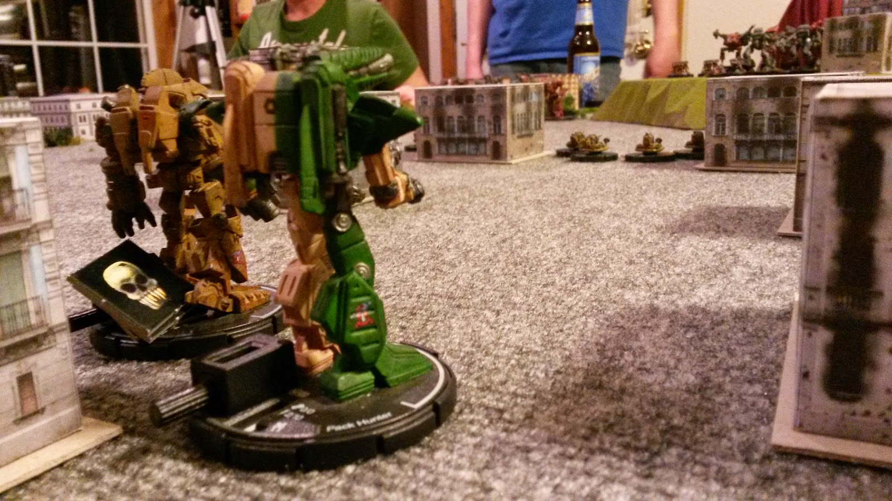

For First Contact · Skirmish, 600-point limit · Formula 0.3-alpha-6
Each patrol has three ’Mechs, one vehicle, and one three-base infantry squad. Each has five activation groups: M1, M2, M3, V1, and C1. Label the infantry C1a, C1b, and C1c; they keep separate dials but share an order.
Choose one patrol each. Both may deploy on either side. Their totals are close, but their matchup has not been tested on the table.
Patrol A
592 points · 7 models · 5 activation groups.
Load Patrol A in the builder to print its unit cards or change models.
| Roster ID | Model and catalog ID | Bases | Points | Pilot |
|---|---|---|---|---|
| M1 | Dasher II · AOD106 · Veteran | 1 | 160 | Gunner |
| M2 | Hatchetman · AOD104 · Elite | 1 | 260 | Brawler |
| M3 | Mongoose · AOD082 · Veteran | 1 | 98 | Engineer |
| V1 | Hadur Fast Support Vehicle · AOD041 · Green | 1 | 32 | — |
| C1 | Standard Foot · D006 · Elite | 3 | 42 | — |
Patrol B
597 points · 7 models · 5 activation groups.
Load Patrol B in the builder to print its unit cards or change models.
| Roster ID | Model and catalog ID | Bases | Points | Pilot |
|---|---|---|---|---|
| M1 | Dasher II · AOD106 · Veteran | 1 | 160 | Gunner |
| M2 | Hatchetman · AOD104 · Elite | 1 | 260 | Brawler |
| M3 | Mongoose · AOD081 · Green | 1 | 112 | Engineer |
| V1 | Saxon APC · AOD056 · Veteran | 1 | 23 | — |
| C1 | Standard Foot · D006 · Elite | 3 | 42 | — |
Neither vehicle is designated as a carrier, including the APC in Patrol B. Infantry start on foot. These lists use no Rocket substitutes. Use normal equipment, pilots, heat, and readiness.
The catalog IDs specify the exact ranks and dials. If you lack a listed figure, use another legal 600-point Skirmish list, or agree to use clearly labeled stand-ins with these cards. Keep the armies within 12 points of each other when testing this matchup. Costs come from the shared formula and update on rebuild.
To print: load the patrol, choose Print cards / dials, select Unit cards or Dials only, then Print / Save as PDF. Existing saved models are replaced only after you accept the builder’s prompt; export your list first to keep it.